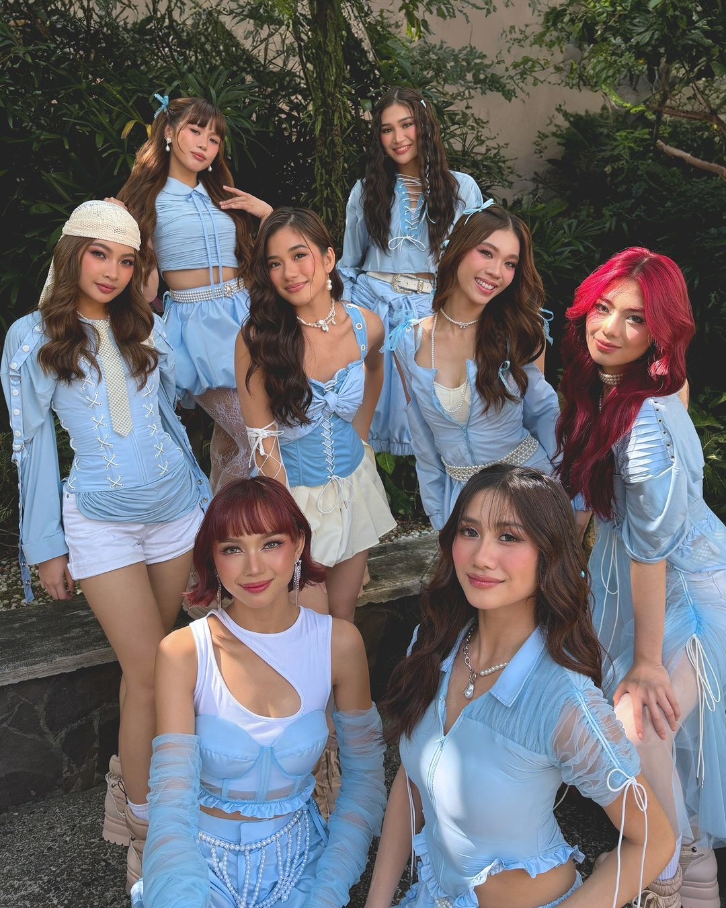

Discovering My Passion in IT and Life
My Skills
One of my skills is problem-solving, which helps me find solutions to challenges, especially in IT.1 I am good at logical thinking, which helps me understand programming and debug errors.2 I have experience using C# for software development and object-oriented programming from my 2nd-year college courses.3 I have basic skills in web development, including HTML, CSS, and JavaScript, for creating simple websites.4 I can manage databases using SQL to store and retrieve information effectively.5 I adapt quickly to new technologies, which keeps me updated in IT.6 My attention to detail helps me write clean and correct code when necessary.7 I work well in teams and communicate my ideas clearly.8 I have knowledge of troubleshooting basic computer and software issues and am eager to learn more.9 I do my best to be punctual for my classes, though I sometimes struggle, but I always strive for improvement.10 I balance school, coding, and hobbies while making time for self-reflection.11 I am interested in UI/UX design to create visually appealing and user-friendly applications.12 I am proficient in basic computer operations such as file management and web browsing.13 I utilize word processing and spreadsheet applications for school and assignments.14 I follow cybersecurity best practices, such as using strong passwords and avoiding suspicious sites.15 Lastly, I enjoy learning new IT skills to expand my knowledge and keep up with technological advancements.16


My Hobbies
My hobbies include playing the guitar, both acoustic and electric.1 I enjoy watching K-dramas and movies on Netflix in my free time.2 Listening to music relaxes me, and I like the British boy band The 1975, particularly their R&B and electronic pop tracks.3 The P-pop female group BINI also motivates me to always give my all.4 Their music comforts me in many ways and reminds me to work hard for my future self.5 Playing badminton also keeps me active and is fun.6 I like exploring new technology and trying out different apps.7 I enjoy reading about programming and watching tech tutorials.8 Traveling during summer is one of the things I like because I love capturing moments with my camera.9 Looking at the pictures takes me back to those memories, which I will treasure for a lifetime.10 I love drinking matcha-flavored drinks and desserts.11 Writing my thoughts or tech ideas is something I do occasionally.12 I like playing mobile and PC games that require strategy.13 Watching YouTube and TikTok videos about IT, music, and travel is part of my routine.14 Spending time with family and friends is important to me.15 I enjoy learning new skills like coding and web design.16 Cooking simple recipes is fun when I have time, and I enjoy rearranging my workspace.17 After a busy day, I relax with music and reflect on new things I’ve learned.18 My hobbies make me feel comfortable and happy at home.19 They allow me to balance productivity and relaxation in my daily life.20

Back to Top
My Interests
One of my interests is understanding how different programming languages work.1 I'd like to learn more about web development, particularly how HTML is utilized to make websites.2 I am also interested in cybersecurity and how to keep computers safe from hackers.3 Software development fascinates me because it allows me to create useful applications.4 I like UI/UX design and how to make websites and apps visually appealing.5 I am curious about game development and how games are made.6 I want to learn more about cloud computing and how it stores data online.7 Driving a car is something I want to learn.8 I enjoy exploring and expanding my knowledge of technology, particularly in web development and database administration.9 Designing user-friendly interfaces and writing clean, efficient code is fulfilling for me.10 I enjoy problem-solving and being creative, whether it is fixing hardware issues or improving software performance.11 Understanding how various systems interact fascinates me, especially in networking and system management.12 I like experimenting with different techniques to build interactive experiences in game development.13 Keeping up with new tools and technology helps me develop my abilities.14 Learning about different aspects of IT keeps me motivated to improve.15 Exploring programming logic and algorithms interests me.16 I am eager to discover how automation can simplify tasks.17 I like staying updated with the latest advancements in the tech industry.18 Above all, I am passionate about continuous learning and self-improvement.19 I always seek opportunities to grow and expand my knowledge.20